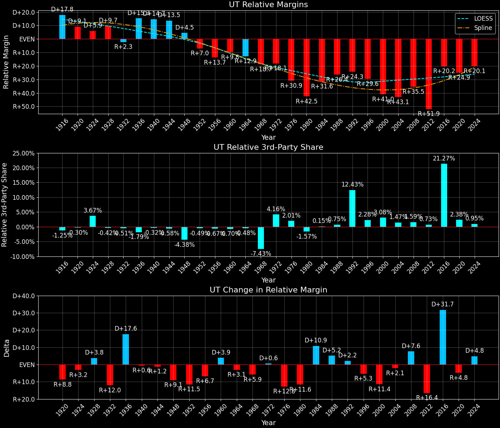
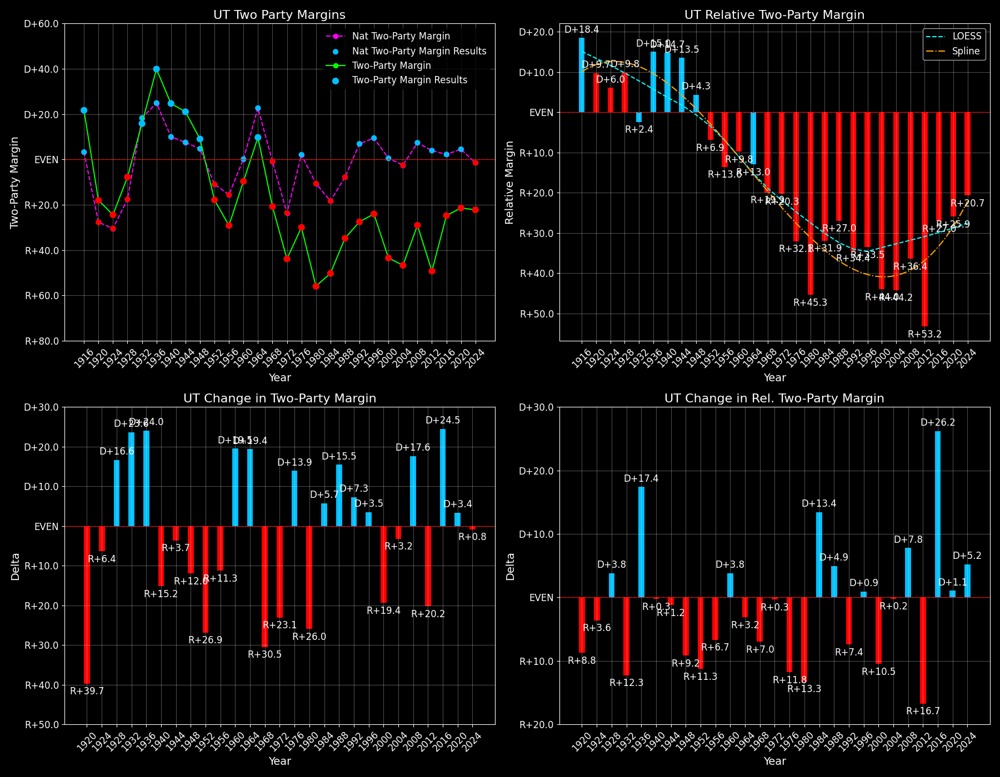

Utah (UT) — Statewide

Margins · 3rd-Party share · Pres. deltas

Relative margins · Relative 3rd-Party · Rel. deltas
Utah (UT) — Total Data
| Year | EVs | D | R | State Margin | Nat. Margin | Rel. Margin | Total votes |
|---|---|---|---|---|---|---|---|
| 1968 | 4 | 156,665(37.1%) | 238,728(56.5%) | R+19.4 | R+0.6 | R+18.8 | 422,299 |
| 1972 | 4 | 126,284(28.1%) | 323,643(71.9%) | R+43.9(Δ R+24.4) | R+23.5(Δ R+23.0) | R+20.3(Δ R+1.5) | 449,927 |
| 1976 | 4 | 182,110(33.6%) | 337,908(62.4%) | R+28.8(Δ D+15.1) | D+2.2(Δ D+25.7) | R+31.0(Δ R+10.7) | 541,198 |
| 1980 | 4 | 124,266(20.6%) | 439,687(72.8%) | R+52.2(Δ R+23.4) | R+9.9(Δ R+12.1) | R+42.3(Δ R+11.3) | 604,222 |
| 1984 | 5 | 155,369(24.9%) | 469,105(75.1%) | R+50.2(Δ D+2.0) | R+18.1(Δ R+8.2) | R+32.1(Δ D+10.2) | 624,474 |
| 1988 | 5 | 207,343(32.6%) | 428,442(67.4%) | R+34.8(Δ D+15.5) | R+7.7(Δ D+10.4) | R+27.0(Δ D+5.1) | 635,785 |
| 1992 | 5 | 183,429(24.7%) | 322,632(43.4%) | R+18.7(Δ D+16.1) | D+5.6(Δ D+13.3) | R+24.3(Δ D+2.7) | 744,069 |
| 1996 | 5 | 221,633(33.3%) | 361,911(54.4%) | R+21.1(Δ R+2.4) | D+8.6(Δ D+3.0) | R+29.6(Δ R+5.3) | 665,628 |
| 2000 | 5 | 203,053(26.4%) | 515,096(66.9%) | R+40.5(Δ R+19.4) | D+0.5(Δ R+8.0) | R+41.0(Δ R+11.4) | 770,406 |
| 2004 | 5 | 241,199(26.0%) | 663,742(71.6%) | R+45.6(Δ R+5.1) | R+2.5(Δ R+3.0) | R+43.1(Δ R+2.1) | 926,888 |
| 2008 | 5 | 327,670(34.4%) | 596,054(62.6%) | R+28.2(Δ D+17.4) | D+7.3(Δ D+9.7) | R+35.4(Δ D+7.7) | 952,386 |
| 2012 | 6 | 251,813(24.8%) | 740,600(72.8%) | R+48.0(Δ R+19.9) | D+3.9(Δ R+3.4) | R+51.9(Δ R+16.5) | 1,017,401 |
| 2016 | 6 | 310,676(27.5%) | 515,231(45.5%) | R+18.1(Δ D+30.0) | D+2.1(Δ R+1.8) | R+20.2(Δ D+31.7) | 1,131,375 |
| 2020 | 6 | 560,282(37.7%) | 865,140(58.2%) | R+20.5(Δ R+2.4) | D+4.4(Δ D+2.3) | R+24.9(Δ R+4.8) | 1,487,677 |
| 2024 | 6 | 562,566(37.8%) | 883,818(59.4%) | R+21.6(Δ R+1.1) | R+1.5(Δ R+6.0) | R+20.0(Δ D+4.9) | 1,488,494 |
Column explanations
- Δ
- Change (delta) in the value from the previous election year.
- Year
- Election year.
- EVs
- Number of electoral votes allocated to this state or unit.
- D
- Number of votes for the Democratic candidate (raw count(pct%)).
- R
- Number of votes for the Republican candidate (raw count(pct%)).
- State Margin
- Margin between the two major-party candidates, including third-party votes ((D - R)/total).
- Nat. Margin
- The national presidential margin for that year, including third-party votes ((D_total - R_total)/total_votes).
- Rel. Margin
- The presidential margin relative to the national presidential margin (Margin - Nat. Margin).
- Total votes
- Total voter turnout or ballots cast (when provided).
Utah (UT) — Third-Party Data
| Year | Other votes | State 3rd-Party Share | 3rd-Party Nat. Share | 3rd-Party Rel. Share |
|---|---|---|---|---|
| 1968 | 26,906(6.4%) | 6.37% | 13.59% | -7.21% |
| 1972 | 0(0.0%) | 0.00% | 0.09% | -0.09% |
| 1976 | 21,180(3.9%) | 3.91% | 0.33% | 3.58% |
| 1980 | 40,269(6.7%) | 6.66% | 6.98% | -0.31% |
| 1984 | 0(0.0%) | 0.00% | 0.12% | -0.12% |
| 1988 | 0(0.0%) | 0.00% | 0.21% | -0.21% |
| 1992 | 238,008(32.0%) | 31.99% | 19.23% | 12.76% |
| 1996 | 82,084(12.3%) | 12.33% | 9.68% | 2.65% |
| 2000 | 52,257(6.8%) | 6.78% | 3.65% | 3.13% |
| 2004 | 21,947(2.4%) | 2.37% | 0.84% | 1.53% |
| 2008 | 28,662(3.0%) | 3.01% | 1.38% | 1.63% |
| 2012 | 24,988(2.5%) | 2.46% | 1.62% | 0.83% |
| 2016 | 305,468(27.0%) | 27.00% | 5.54% | 21.46% |
| 2020 | 62,255(4.2%) | 4.18% | 1.84% | 2.34% |
| 2024 | 42,110(2.8%) | 2.83% | 1.88% | 0.95% |
Column explanations
- Year
- Election year.
- Other votes
- Number of votes for third-party (other) candidates (raw count(pct%)).
- State 3rd-Party Share
- Share of the vote received by third-party (other) candidates.
- 3rd-Party Nat. Share
- The national third-party share for that year (3rd-Party votes / total votes).
- 3rd-Party Rel. Share
- Third-party share relative to the national third-party share (3rd-Party share - Nat. 3rd-Party share).

Two-party margins · relative · deltas
Utah (UT) — Two-Party Data
| Year | 2-Party Margin | 2-Party Nat. Margin | 2-Party Rel. Margin |
|---|---|---|---|
| 1968 | R+20.8 | R+0.7 | R+20.1 |
| 1972 | R+43.9(Δ R+23.1) | R+23.6(Δ R+22.9) | R+20.3(Δ R+0.2) |
| 1976 | R+30.0(Δ D+13.9) | D+2.2(Δ D+25.8) | R+32.2(Δ R+11.9) |
| 1980 | R+55.9(Δ R+26.0) | R+10.6(Δ R+12.8) | R+45.3(Δ R+13.1) |
| 1984 | R+50.2(Δ D+5.7) | R+18.1(Δ R+7.5) | R+32.1(Δ D+13.2) |
| 1988 | R+34.8(Δ D+15.5) | R+7.8(Δ D+10.4) | R+27.0(Δ D+5.1) |
| 1992 | R+27.5(Δ D+7.3) | D+6.9(Δ D+14.7) | R+34.4(Δ R+7.4) |
| 1996 | R+24.0(Δ D+3.5) | D+9.5(Δ D+2.6) | R+33.5(Δ D+0.9) |
| 2000 | R+43.5(Δ R+19.4) | D+0.5(Δ R+8.9) | R+44.0(Δ R+10.5) |
| 2004 | R+46.7(Δ R+3.2) | R+2.5(Δ R+3.0) | R+44.2(Δ R+0.2) |
| 2008 | R+29.1(Δ D+17.6) | D+7.4(Δ D+9.8) | R+36.4(Δ D+7.8) |
| 2012 | R+49.3(Δ R+20.2) | D+3.9(Δ R+3.4) | R+53.2(Δ R+16.8) |
| 2016 | R+24.8(Δ D+24.5) | D+2.2(Δ R+1.7) | R+27.0(Δ D+26.2) |
| 2020 | R+21.4(Δ D+3.4) | D+4.5(Δ D+2.3) | R+25.9(Δ D+1.1) |
| 2024 | R+22.2(Δ R+0.8) | R+1.6(Δ R+6.1) | R+20.6(Δ D+5.3) |
Column explanations
- Δ
- Change (delta) in the value from the previous election year.
- Year
- Election year.
- 2-Party Margin
- Margin between the two major-party candidates, ignoring third-party votes ((D - R)/(D + R)).
- 2-Party Nat. Margin
- The national presidential margin for that year, including third-party votes ((D_total - R_total)/total_votes).
- 2-Party Rel. Margin
- The presidential margin relative to the national presidential margin (Margin - Nat. Margin).